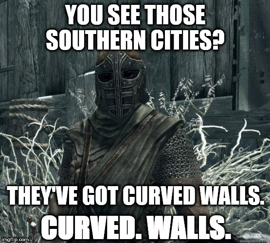

Siege Battle Maps (3K)
NOTE: This is an adaptation of the WH2 Siege Map tutorial,
so some parts are literally copy/pasted from there.
If you come from Warhammer 2 MapMaking community,
then you'll feel like home here.
Siege maps are.... complex beasts. They're the most detailed, time-consuming, and memorable battlemaps you can play in a Total War game, yet they're so complex people often fail to get their full potential realized. So today, we're going to learn how to make a proper siege map. With proper walls, capture nodes, working towers and AI support. So if the AI doesn't work as you want, you can no longer say it's just the AI's fault!
Before we begin, a little warning: this tutorial is on the advanced side, and it's quite technical. I'll try to explain all the stuff that is hard to understand, but this assumes you have at least learnt how to do basic things in Terry, like painting the map, placing buildings, etc. If not, go watch another tutorial that cover the basics, then come back when you can move around Terry.
Requirements
First, we need a few tools and resources to make a proper siege battle map:
Assembly Kit: You can install it from Steam. We'll use Terry, one of the included tools in the Assembly Kit to make the map.Sleeping Tiger of Tianshan: You can get it from here. These are the source files of Sleeping Tiger of TianShan's Custom Map, to serve as an example of a fully working SiegeAI, because otherwise people seems unable to make the SiegeAI work..... Just don't reupload this map, neither his source files or exported packfile.
Once we have these tools and resources, we can start talking about making maps! Next, let's get clear the technical requirements of a Siege Battle Map. First, for it to just work we need:
- Two Deployment Zones. One for the attacker, one for the defender.
- One Additive Deployment Region inside of each deployment zone.
- Walls. Yeah, walls. With gates, towers, and even more walls.
That's enough to make it kinda work in a player vs player game, but it'll be barely playable. For a proper player vs AI, there's quite a lot more to do:
- Deployment AI Hints, only in the attacker's deployment zone.
- Attacker/Defender Reinforcement Lines. Optional, only needed if you plan to make the map work in campaign.
- Battlefield Zones, to make the walls garrisonable.
- Capture Points, to be able to capture places.
- SiegeAI Layout, to make the AI work in the map.
- Fort Perimeter AI Hint, to make the SiegeAI Layout not crash the game.
- Barricades: to make you and the AI able to place barricades on the map.
- Civilians: to make civilians spawn on your map.
- Set the map to load as a Siege Battle Map, not a Land Battle Map. Otherwise, part of the AI will be broken.
And if you want to do like me, and go beyond that, there's still the possibility of adding custom buildings, custom towers, or other unique gimmicks, but that's outside the scope of this tutorial, so we're going to keep it simple, and just focus on those requirements.
And now we're going to go through the five phases of siege mapmaking.
Phase 1: the funny part.
To begin, create a new map in Terry, name it whatever you want,, set it as a Siege BattleMap and.... start building it. Place your buildings, change your terrain... just make the map you want. But you need to keep some things in mind:
- First, MAKE STREETS WIDE ENOUGH. The number one problem of siege maps is street width. People tend to make them too narrow, and then units can’t be deployed or maneuvered properly, and the map is a nightmare to fight on. This is the biggest thing you have to take into account: don't make narrow streets. Make them at least big enough you can fit one and a half ultra-sized infantry units, on wide formation. Less than that will give you big problems in playability.
- Second, USE WALL BUILDINGS/PREFABS, NOT WALL PROPS. A building has logic and collision. A prop doesn't have logic nor collision. When placing your walls, always use the walls from the
BuildingsorPrefabsections, never from thePropssection. - Third, keep your city/castle/town layout simple. The more complex it gets (for example, very long and zigzagging streets or narrow streets) the harder it gets for the AI to defend it and attack it effectively. Also, the harder it gets for your CPU to get the pathfinding for the units working, which means more CPU load.
- Fourth, don't make curved walls! As we're going to see in a later point, walls need a special, very precise set-up to work. So don't make your map planning on having working curved walls. You can have fake unusable curved walls, but not real ones.

With those points in mind, create your map. Once you have put down your buildings, painted your map, and had fun, it's time for the serious business.
Phase 2: Trust me, I'm an Engineer.
Now we are going to make the map playable, which means finishing the first of the two requirements list. First, the deployment zones.
Deployment Zones control where a specific alliance or player can deploy their units at the start of the battle. It's simple: make one around the place you want the attacker to deploy, and the same for the defender. Each defender zone you create will automatically have an additive region inside it. You can create different regions within a deployment zone:
Additive: The units of this alliance can deploy inside it.Subtractive: The units of this alliance cannot deploy inside it.Guerrilla Exclusion Additive: The units of the enemy alliance cannot deploy inside it when using vanguard deployment.Guerrilla Exclusion Subtractive: The units of the enemy alliance can deploy inside it when using vanguard deployment.
For a simple land battle map, you can just use the default additive region and let the game generate the vanguard deployment zones by itself. But in this case, I personally recommend you make the vanguard zones yourself, especially if your settlement's borders have weirdly-shaped deployment zones/walls. To do that you have to follow some simple steps:
- Starting with your additive deployment regions already done, draw a
Guerrilla Exclusion Additivearound the entire map. That'll remove the auto-generated vanguard deployment zones. - Then, draw a
Guerrilla Exclusion Subtractivearound the enemy's deployment zone. The enemy's vanguard-deploying units will only be able to deploy here, so make sure their originalAdditiveregion is contained inside this one. Otherwise, there may be parts of their base deployment region where vanguard units cannot be deployed!
You can select the alliance in the entity options of the Deployment Zone. Alliance 0 is the attacker, 1 is the defender, and 2 and 3 are for FFA maps, so don't use them here.
Also, you need to place some Deployment AI Hints to tell the AI for good places to deploy inside their normal/vanguard deployment zone. Just draw a few of them in single lines. If you draw a line with more that two vertex the AI will ignore it.
Next, the walls. A good siege needs a good wall. Everybody knows that. Everybody. Walls are the first basic obstacle the attacker has to pass. So we have to make one.

Walls are special buildings with special logic, and such they need to be placed in a special way. For this task I recommend you enabling Grid Snapping and Show Building Collision Outlines settings in Terry. Grid Snapping will make sure your buildings are placed at fixed intervals when placing or moving them (not 0.324->0.325->0.326, but 0->1->2). Show Building Collision Outlines will make the collision line of your walls (that pink border you may see around each piece of wall) appear, which is very helpful to find moved/misaligned walls.
First, the walls, gates, towers, etc, we are going to use are the ones from Prefabs, not the ones from Buildings. Why? Because they already include most of the things we need to make them work.
Next, walls need to be placed one after another, with perfect precision. And I mean PERFECT PRECISION. A 0.001 of difference between wall pieces will break their connection, causing problems with units trying to scale/garrison them. Walls usually are made with a fixed size (for example, they're 24x10 in Three Kingdoms), so if you put a wall on (x:50, y:0, z:10) the next one has to be in (x:74, y:0, z:10) to work. Perfectly connected, as all things should be. And knowing that, just place them forming your great wall. The same happens for even more special walls, like Corners, Blocks, Gates and Towers. Just align them properly, and you're done.
Next, Barricades. These are simple: pick the barricade prefab, place it on the map and... done. It should work "as is". Just take this into account:
- There should be no walkable space between their ends and the border of the street.
- You can't physically lock out parts of your city (or the AI will bug out in marvellous ways).
With that, you should be able to export your wonderful map, start the game, start the battle and... it'll barely work. Gates and Towers will work, but the walls will not be garrisonable and the AI will behave erratically. Then you cry. Then you beg everyone for help. Then you realize you still have work to do.
Phase 3: WHY U NOT WORK????
Now it's time for the second hardest part. To make your map work. Take a coffee (or a tea if you’re a British cartographer), and relax. You'll need it.
First, we're going to make the walls work. As I said before, walls are special buildings. They have logic, but that logic doesn't work as is. That logic only works when the building is put inside a Battlefield Zone. A Battlefield Zone is what makes your units able to get in formation atop the walls. Just click in the Battlefield Zone (locked) button under logic stuff and draw a Battlefield Zone around your walls and gates.
Once you get the Battlefield Zones you need for your walls, you can load your map in-game and lo and behold! Your units can now get in formation atop the walls!
Next, let's make the map winnable by capping. Make one or more Capture Zones, set them as Major, Victory and... you're done. Gates and Towers already include their own capture zones, so we don't need zones for them.
Now we can export it again, and test it. Many things will still be broken, but you can use this test to ensure your Capture Zones are setted up correctly. The VP should have a special icon and appear on the minimap!
That ends the second hardest part. Now it comes the first one: SiegeAI.
Phase 4: Every time I export, the gods toss a coin in the air.
Siege and Resource Battle Maps use a system called SiegeAI to get the AI to understand the layout of a map. The system is basically a layout of nodes and links. Like an overlay over the map that the AI can understand. Here is where a lot of people start getting angry because a bad set-up of this system can and will crash your game.
First, let's explain the parts of the SiegeAI System. The system consist of Nodes (for the AI to recognize important places to defend) and Edges (links between those places).
Nodes are usually composed by the node itself (pink) and a linked boundary (purple). The node is what the units will recognize and use to move, the boundary is used to define the logical borders of the node. The different types of nodes are:
Area Node: Where the AI will deploy its units. Also, these areas are going to be actively defended by them. Use them for gates, victory points, capture points, and whatever place you want the AI to keep and eye on. Also, the more of these nodes, the less the AI will blob up in big nodes.Intersection Node: for intersections you don't want the AI to actively protect.Wall Area Node: No idea. I suspect that it's to make the AI see special places as walls, but... Haven't been able to get it working.Entry Node: For open entrances on unfortified maps.Firing Node: No idea. We tried to use it multiple times and we only got crashes with it.
Those are the nodes, now the edges:
Street Edge: What you're going to use to connect intersections/areas. It has one edge (pink inner line) and two boundaries (purple), one on each side.Area Connection Edge: Don't really know its use, but it looks and works similar to the street edge.Wall Edge: Just a line. Draw it from one end of the wall section (and by section I mean the entire wall line, not just each little wall piece), all the way to the other. The line should be about midway through the wall. This will make the AI see the wall and use it for both, attacking and defending.Palisade Edge: To make the AI see palisades it can garrison. I guess. We don't need it because the palisades we have already include it.
Also, there are two AI Hints you'll need to make these maps work:
Fort Link: This one is used to 'join' your Wall Edges so, in the end, your Wall Edges + Fort Links form a closed perimeter.Fort Perimeter: This makes the entire SiegeAI system work, and your map will hard-crash if you don't have it. It's also the culprit of most of the AI problems in a Siege.
Now, what do we do with this stuff? Simple:
- Place every non-walkable zone of the map under a No-Go Region. This is useful to reduce the amount of narrow places your units can get stuck, and to... smooth the walkable terrain for the units pathfinding.
- Place an Area/Intersection Node in all intersections of your Siege Battle Map. As an advice, do plenty of Area Nodes, and leave Intersection Nodes for small intersections. That'll give the AI plenty of space to deploy/defend, instead of concentrating all its forces in one place.
- Use Street Edges to connect all your Area/Intersection Nodes. To connect an Edge with a Node, just make sure the Edge (pink) intersects with the Node (pink) and both boundaries of the Edge (purple) intersects with the Node's boundary (purple). Like cables, blue to blue, red to red. For no-exit streets, you can leave the street edge and its boundaries open.
- Draw a Wall Edge from the beginning of the first Wall, to the end of the Last Wall. Usually, there should be one Wall Edge per wall section, but for some reason only the first Wall Edge is used by the AI. The rest are ignored. So, if you have multiple wall segments, connect them using the same Wall Edge.
- Draw a Fort Link closing both ends of the Wall Edge. You just need to make their ends intersect.
- Draw a Fort Perimeter around your entire fort. Not too far from the walls, not too close to the walls. Around 20 units away from the wall is ok.
Once you got all that sorted out, you can play the map and... you'll see the AI working. Or not. In that case, you'll have to tweak you SiegeAI layout and try again. And once you got it working the way you want... the map is done.
Hope this guide has proved itself useful to you, and that you have fun (and suffer) while making Siege Battle Maps!
Bonus Phase: Every man can fight, if you give them the right motivation.
As a bonus, let's add civilians to our map! It's really simple: place a big Civilian Deployment zone where you want your civilians to spawn. Then, add some Civilian Shelters to it. The shelters are just a line with one end green, and one red. Just place the green end in a walkable area, and the red end in a no-go region. Also, if you don't place any shelters, YOUR MAP WILL CRASH. That's all. With that, when there are no units in the civilian deployment zone, civilians will spawn.